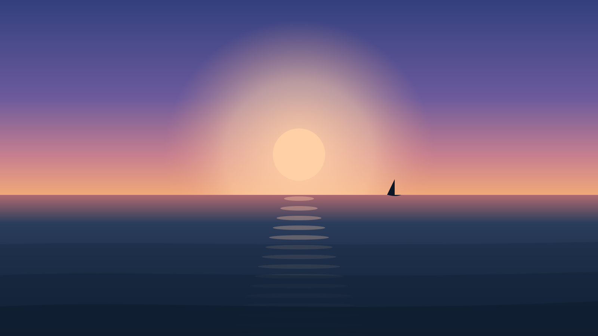

For Therapists
You know the hardest part isn't the therapy — it's getting people to stay engaged long enough for it to work.

Sail Beyond Horizons is built on a simple insight the research keeps confirming: when the experience is genuinely enjoyable, people show up, and they keep showing up.
After each sailing session, you meet one-on-one with your client to process the experience and translate it into transferable coping skills — locus of control, distress tolerance, psychological flexibility, and more. The metaphors are already in the water; you help the client bring them ashore.
Join our therapist network